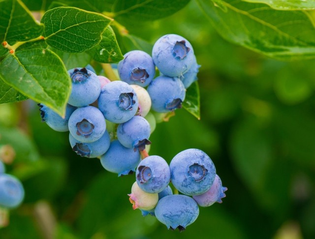

s
Borówki – zdrowie i smak
Właściwości zdrowotne borówek
Borówki są prawdziwą bombą witaminową. Zawierają dużo witaminy C, antyoksydantów i błonnika, co czyni je niezwykle korzystnymi dla zdrowia.
Korzyści zdrowotne:
- Ochrona serca: Zawierają przeciwutleniacze, które pomagają zmniejszać ryzyko chorób serca.
- Wzrok: Poprawiają funkcjonowanie oczu i wspomagają nocne widzenie.
- Pamięć: Mogą wspierać pamięć i funkcje poznawcze.
- Układ odpornościowy: Wysoka zawartość witaminy C wzmacnia odporność organizmu.
Uprawa borówek
Uprawa borówek w domu może być prosta, jeśli zapewni się im odpowiednie warunki. Oto kilka ważnych zasad:
Warunki glebowe
Borówki preferują kwaśną glebę o pH 4,5-5,5. Aby osiągnąć najlepsze wyniki, warto zastosować kwaśne podłoże dostępne w sklepach ogrodniczych.
Nasłonecznienie
Borówki najlepiej rosną w pełnym słońcu, choć mogą tolerować lekki cień. Krzewy powinny być regularnie podlewane, zwłaszcza w okresach suszy.
Odmiany borówek
Odmiany borówek różnią się wielkością owoców, smakiem i czasem dojrzewania. Oto najpopularniejsze odmiany:
- Duke – Wczesna odmiana o dużych, słodkich owocach.
- Bluecrop – Bardzo popularna, odporna na mróz, daje duże plony.
- Patriot – Silnie rosnąca odmiana, odporna na choroby.
- Spartan – Duże owoce, idealne do deserów i przetworów.

Przepisy z borówkami
Owoce borówki amerykańskiej są doskonałym składnikiem wielu przepisów, od koktajli po desery.
1. Smoothie z borówkami
Składniki:
- 1 banan
- 1 szklanka borówek
- 1/2 szklanki jogurtu naturalnego
- 1/2 szklanki mleka migdałowego
- 1 łyżeczka miodu
Zmiksuj wszystkie składniki na gładką masę. Podawaj schłodzone.
2. Naleśniki z borówkami
Składniki na ciasto naleśnikowe:
- 1 szklanka mąki
- 1 jajko
- 1 szklanka mleka
- 1 łyżeczka proszku do pieczenia
Wymieszaj składniki i smaż naleśniki na patelni. Podawaj z garścią świeżych borówek i syropem klonowym.
Zła borówka po przegranej jej ulubionej drużyny
Ciekawostki o borówkach
- Borówki są kosmiczne: Borówki były jednym z pierwszych owoców, które wysłano na orbitę w ramach posiłków astronautów.
- Wojskowe tajemnice: Podczas II wojny światowej, brytyjscy piloci jedli borówki, aby poprawić widzenie w nocy.
- Superfood: Borówki są uważane za superfood, dzięki wysokiej zawartości antyoksydantów i korzystnym wpływom na zdrowie.
Dowiedz się więcej ciekawostek
super strona o bananach(kliknij by zobaczyć)